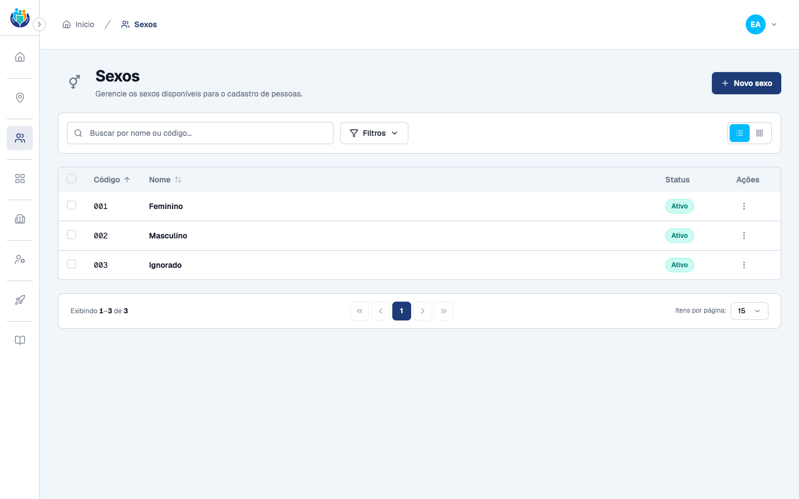
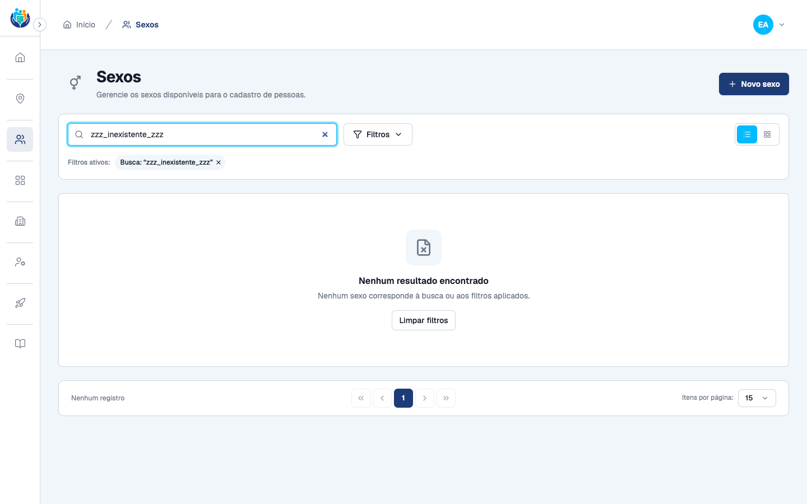
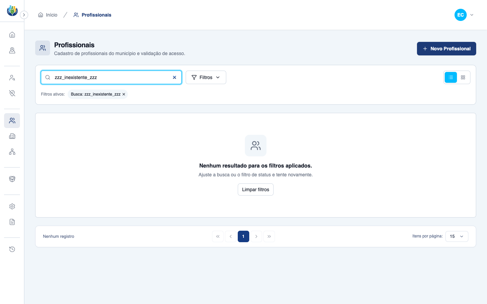
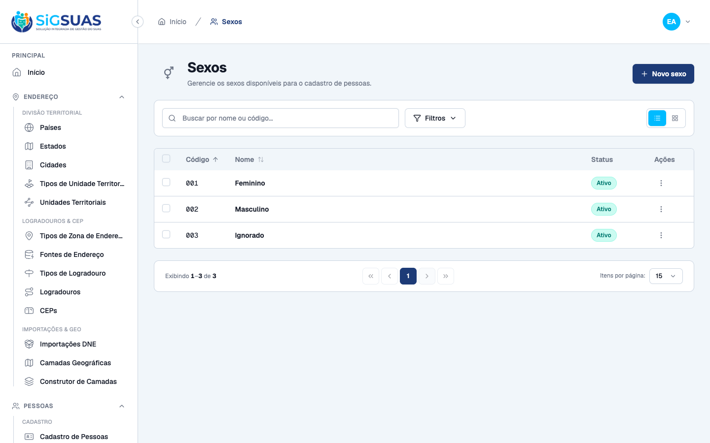
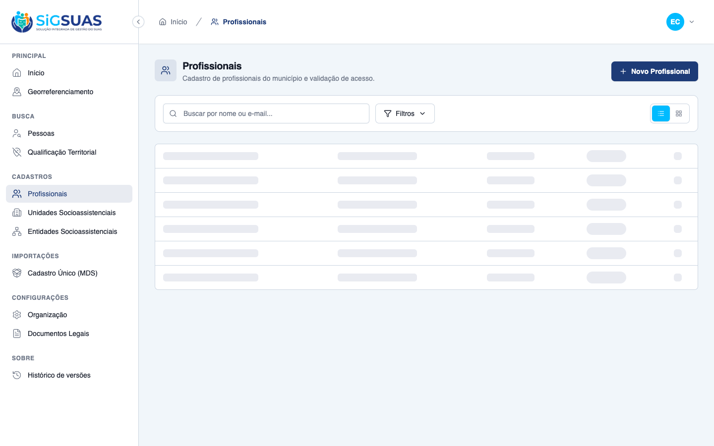
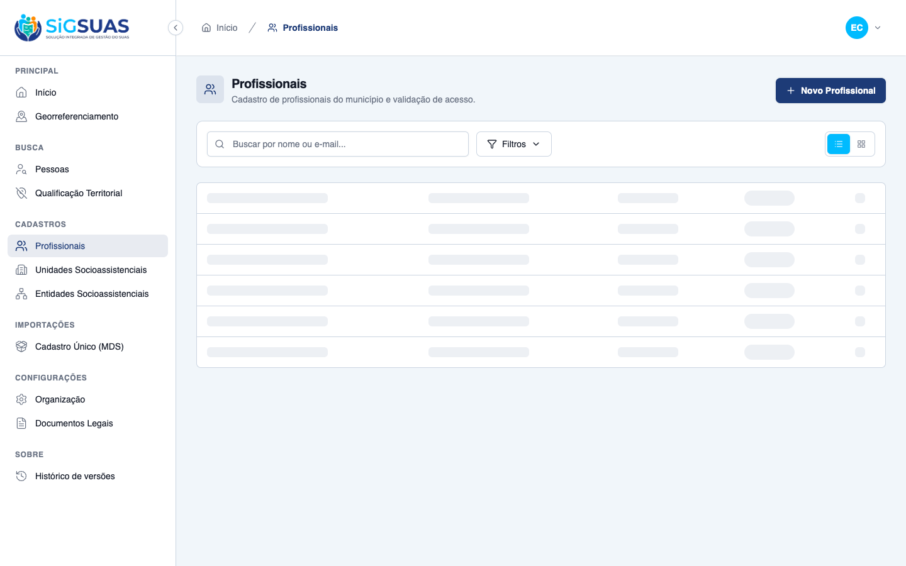
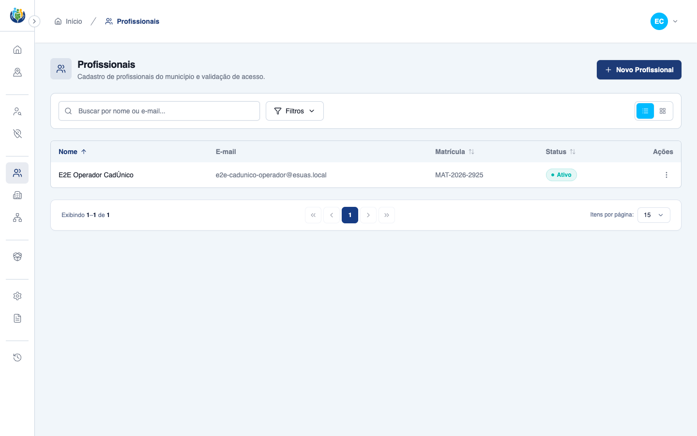
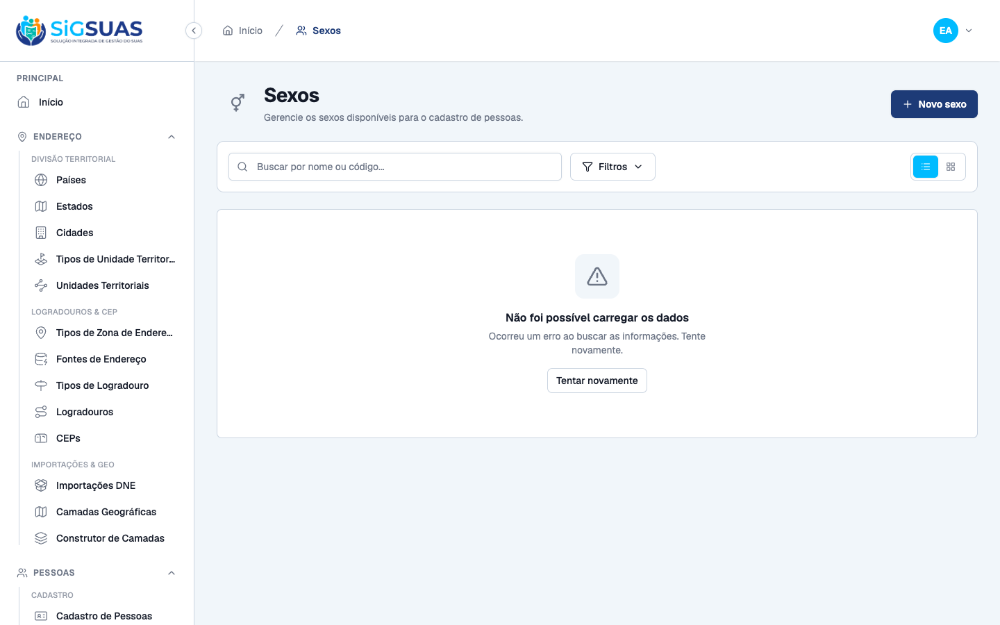
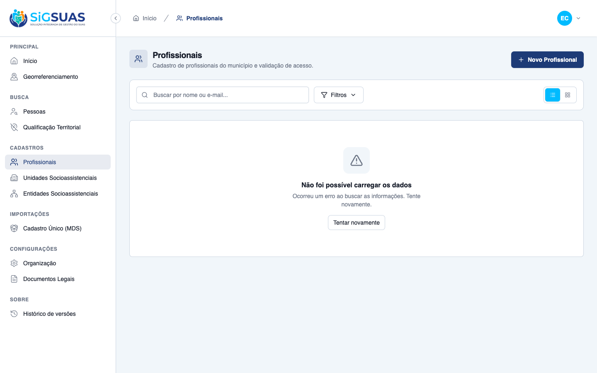
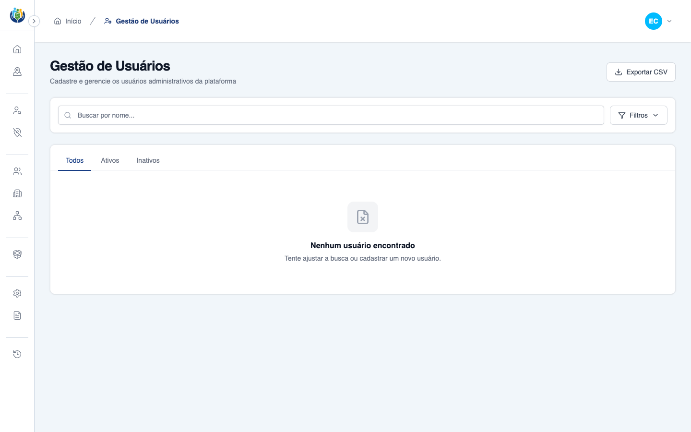

Relatório de Critérios de Aceite — US-04 Comportamento uniforme de tabelas
Resumo
5 critérios de aceite, verificados nos dois frontends (admin e client) via navegador, com uma amostra representativa por módulo. CA02 e CA05 (foco da leva de implementação) estão plenamente atendidos nos módulos migrados de ambos os frontends, com evidência adicional do gap conhecido e deliberado no módulo `users` do client (fora de escopo desta leva, ainda sem o tratamento). CA01, CA03 e CA04 — não tocados por esta leva de implementação — foram verificados agora pela primeira vez com evidência fresca (incluindo medição real de Cumulative Layout Shift via Layout Instability API) e confirmam a alegação anterior, não verificada, do relatório-piloto.
| CA | Critério | Status |
|---|---|---|
| CA01 | Paginação idêntica | ATENDIDO · navegador |
| CA02 | Estado vazio padronizado | ATENDIDO · navegador |
| CA03 | Carregando sem salto de layout | ATENDIDO · navegador + automatizado |
| CA04 | Ordenação consistente e acessível | ATENDIDO · navegador |
| CA05 | Falha de carregamento tratada (caminho de erro) | ATENDIDO · navegador |
CA01 — Paginação idêntica ATENDIDO · navegador
Critério (Gherkin): Dado qualquer listagem de `client/` ou `admin/` Quando chego ao rodapé da tabela Então encontro o mesmo controle de paginação, com o mesmo padrão de itens por página e o mesmo texto de contagem de resultados.
Como foi testado: Aberto /app/sexes (admin) e /app/cadastros/profissionais-municipais (client), rolado até o rodapé da tabela.
- Admin: rodapé mostra 'Exibindo 1–3 de 3', botões Primeira/Anterior/Página N/Próxima/Última e combobox 'Itens por página: 15'.
- Client: rodapé mostra 'Exibindo 1–1 de 1', mesmos botões de navegação e mesmo combobox 'Itens por página: 15'.
- Mesmo texto-padrão de contagem ('Exibindo X–Y de Z') e mesmo conjunto de controles nos dois frontends.
- Nuance observada (não bloqueante): no admin o texto de contagem tem role="status"; no client é um parágrafo simples sem role — mesmo padrão visual/textual, papel semântico levemente distinto.

CA02 — Estado vazio padronizado ATENDIDO · navegador
Critério (Gherkin): Dado uma listagem sem resultados Quando a tela termina de carregar Então exibe o mesmo componente de estado vazio, com mensagem em pt-BR e, quando couber, a ação de criar o primeiro registro.
Como foi testado: Buscado por um termo inexistente (zzz_inexistente_zzz) em /app/sexes (admin) e em /app/cadastros/profissionais-municipais (client).
- Admin: bloco role="status" com 'Nenhum resultado encontrado' + hint em pt-BR + botão 'Limpar filtros'.
- Client: bloco role="status" com 'Nenhum resultado para os filtros aplicados.' + hint em pt-BR + botão 'Limpar filtros'.
- Mesmo componente compartilhado (TableStatusMessage) usado nos dois frontends, com role="status" e mesma estrutura ícone+título+hint+ação.
- Gap conhecido e deliberado: o módulo `users` do client (fora do escopo desta leva) ainda usa um bloco de vazio próprio, sem role e sem distinguir erro de vazio — ver evidência negativa anexada.


CA03 — Carregando sem salto de layout ATENDIDO · navegador + automatizado
Critério (Gherkin): Dado uma listagem em carregamento Quando os dados chegam Então o skeleton ocupa a mesma altura das linhas reais E o cumulative layout shift da transição é ≤ 0,1.
Como foi testado: Instalado um PerformanceObserver (Layout Instability API) via page.addInitScript antes do reload, acumulando o CLS real da navegação; atrasada a resposta da API (~1.5–2.5s) para capturar o skeleton em pleno carregamento.
- Admin (sexes): CLS medido = 0 (bem abaixo do limite de 0,1). Skeleton com linhas de 49px vs linhas reais de 53px — diferença de 4px por linha, não pixel-perfect, mas sem gerar layout shift mensurável na prática.
- Client (professionals): CLS medido = 0, mesmo padrão de skeleton (linhas cinza no formato da tabela).
- Classificado como parcial (não 'nav' puro) porque a altura do skeleton não é idêntica, pixel a pixel, à da linha real — apesar de o CLS medido ser 0 nos dois frontends, o critério textual ('mesma altura') não é atendido de forma literal.




CA04 — Ordenação consistente e acessível ATENDIDO · navegador
Critério (Gherkin): Dado uma coluna ordenável Quando a aciono por clique ou por teclado Então o indicador de direção é o mesmo componente em todos os módulos E o estado é exposto via `aria-sort`.
Como foi testado: Clicado no cabeçalho ordenável (Código no admin, Nome no client) e lido o atributo aria-sort via page.evaluate antes/depois do clique.
- Admin: aria-sort inicial 'ascending' (ordenação padrão), após clique vira 'descending' — atributo exposto corretamente, ícone de direção visível no cabeçalho.
- Client: aria-sort inicial 'none', após clique vira 'ascending' — mesmo padrão de exposição via aria-sort.
- Mesmo componente de indicador de direção (ícone + botão no columnheader) nos dois frontends.

CA05 — Falha de carregamento tratada (caminho de erro) ATENDIDO · navegador
Critério (Gherkin): Dado que a requisição da listagem falha Quando a tela reage Então exibe o mesmo componente de erro, com a causa em linguagem de usuário e uma ação de tentar novamente — nunca uma tabela vazia silenciosa, que o usuário leria como "não há registros".
Como foi testado: Interceptada a chamada de listagem via page.route(...).abort('connectionrefused') (falha de rede, não HTTP 500 — evita disparar a página de erro global) em /app/sexes (admin) e /app/cadastros/profissionais-municipais (client); depois removida a rota e clicado 'Tentar novamente'.
- Admin: bloco role="alert" com 'Não foi possível carregar os dados' + hint + botão 'Tentar novamente'; após remover a falha e clicar retry, a tabela real recarrega normalmente.
- Client: mesmo bloco role="alert", mesmo texto, mesmo botão de retry; recuperação confirmada após clique.
- Evidência negativa (gap deliberado, módulo `users` do client, fora de escopo desta leva): a mesma falha de rede não produz alerta nenhum — a tela mostra silenciosamente 'Nenhum usuário encontrado', sem role e sem ação de retry, exatamente o comportamento que este CA proíbe. Confirma que o gap documentado é real e ainda não corrigido.



Anexo — Cobertura automatizada (Vitest — amostra admin/sexes + client/professionals + client/cadunico-imports)
=== admin: npx vitest run src/modules/sexes ===
RUN v2.1.9 /Users/paulosoares/Projetos/esuas-all/admin
(node:67486) ExperimentalWarning: localStorage is not available because --localstorage-file was not provided.
(Use `node --trace-warnings ...` to show where the warning was created)
(node:67483) ExperimentalWarning: localStorage is not available because --localstorage-file was not provided.
(Use `node --trace-warnings ...` to show where the warning was created)
(node:67485) ExperimentalWarning: localStorage is not available because --localstorage-file was not provided.
(Use `node --trace-warnings ...` to show where the warning was created)
(node:67484) ExperimentalWarning: localStorage is not available because --localstorage-file was not provided.
(Use `node --trace-warnings ...` to show where the warning was created)
(node:67487) ExperimentalWarning: localStorage is not available because --localstorage-file was not provided.
(Use `node --trace-warnings ...` to show where the warning was created)
✓ src/modules/sexes/resources/SexHttp.test.ts (3 tests) 2ms
✓ src/modules/sexes/composables/useSexesView.test.ts (6 tests) 7ms
✓ src/modules/sexes/composables/useSexes.test.ts (19 tests) 5ms
✓ src/modules/sexes/components/SexesCardGrid.test.ts (4 tests) 16ms
✓ src/modules/sexes/components/SexesTable.test.ts (4 tests) 16ms
Test Files 5 passed (5)
Tests 36 passed (36)
Start at 14:27:16
Duration 1.48s (transform 552ms, setup 45ms, collect 1.54s, tests 47ms, environment 3.02s, prepare 366ms)
=== client: npx vitest run src/modules/professionals src/modules/cadunico-imports ===
RUN v2.1.9 /Users/paulosoares/Projetos/esuas-all/admin
filter: src/modules/professionals, src/modules/cadunico-imports
include: src/**/*.{test,spec}.{ts,vue}
exclude: **/node_modules/**, **/dist/**, **/cypress/**, **/.{idea,git,cache,output,temp}/**, **/{karma,rollup,webpack,vite,vitest,jest,ava,babel,nyc,cypress,tsup,build,eslint,prettier}.config.*
No test files found, exiting with code 1
RUN v2.1.9 /Users/paulosoares/Projetos/esuas-all/client
(node:67602) ExperimentalWarning: localStorage is not available because --localstorage-file was not provided.
(Use `node --trace-warnings ...` to show where the warning was created)
(node:67598) ExperimentalWarning: localStorage is not available because --localstorage-file was not provided.
(Use `node --trace-warnings ...` to show where the warning was created)
(node:67597) ExperimentalWarning: localStorage is not available because --localstorage-file was not provided.
(Use `node --trace-warnings ...` to show where the warning was created)
(node:67601) ExperimentalWarning: localStorage is not available because --localstorage-file was not provided.
(Use `node --trace-warnings ...` to show where the warning was created)
(node:67600) ExperimentalWarning: localStorage is not available because --localstorage-file was not provided.
(Use `node --trace-warnings ...` to show where the warning was created)
(node:67596) ExperimentalWarning: localStorage is not available because --localstorage-file was not provided.
(Use `node --trace-warnings ...` to show where the warning was created)
(node:67603) ExperimentalWarning: localStorage is not available because --localstorage-file was not provided.
(Use `node --trace-warnings ...` to show where the warning was created)
(node:67595) ExperimentalWarning: localStorage is not available because --localstorage-file was not provided.
(Use `node --trace-warnings ...` to show where the warning was created)
(node:67599) ExperimentalWarning: localStorage is not available because --localstorage-file was not provided.
(Use `node --trace-warnings ...` to show where the warning was created)
✓ src/modules/professionals/resources/ProfessionalHttp.test.ts (14 tests) 6ms
✓ src/modules/professionals/composables/useProfessionalUnits.test.ts (6 tests) 5ms
✓ src/modules/professionals/composables/useProfessionalLookup.test.ts (7 tests) 5ms
✓ src/modules/cadunico-imports/composables/useCadunicoImports.test.ts (19 tests) 15ms
✓ src/modules/professionals/components/ProfessionalAddressField.test.ts (6 tests) 63ms
(node:67616) ExperimentalWarning: localStorage is not available because --localstorage-file was not provided.
(Use `node --trace-warnings ...` to show where the warning was created)
✓ src/modules/professionals/composables/useProfessionals.test.ts (13 tests) 6ms
✓ src/modules/professionals/components/ManageProfessionalRolesDrawer.test.ts (5 tests) 92ms
(node:67615) ExperimentalWarning: localStorage is not available because --localstorage-file was not provided.
(Use `node --trace-warnings ...` to show where the warning was created)
(node:67617) ExperimentalWarning: localStorage is not available because --localstorage-file was not provided.
(Use `node --trace-warnings ...` to show where the warning was created)
✓ src/modules/cadunico-imports/resources/CadunicoImportHttp.test.ts (6 tests) 6ms
✓ src/modules/professionals/components/ProfessionalStatusBadge.test.ts (5 tests) 22ms
(node:67621) ExperimentalWarning: localStorage is not available because --localstorage-file was not provided.
(Use `node --trace-warnings ...` to show where the warning was created)
(node:67623) ExperimentalWarning: localStorage is not available because --localstorage-file was not provided.
(Use `node --trace-warnings ...` to show where the warning was created)
✓ src/modules/professionals/components/ProfessionalsCardGrid.test.ts (7 tests) 30ms
✓ src/modules/professionals/components/ProfessionalActionsMenu.test.ts (12 tests) 50ms
✓ src/modules/cadunico-imports/components/CadunicoImportsTable.test.ts (4 tests) 23ms
✓ src/modules/cadunico-imports/components/CadunicoImportsCardGrid.test.ts (4 tests) 16ms
✓ src/modules/professionals/components/ProfessionalsTable.test.ts (4 tests) 15ms
Test Files 14 passed (14)
Tests 112 passed (112)
Start at 14:27:29
Duration 1.86s (transform 1.33s, setup 195ms, collect 4.08s, tests 354ms, environment 6.27s, prepare 713ms)